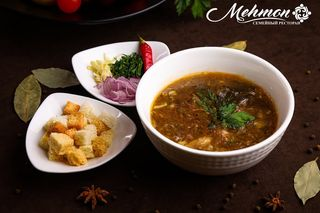
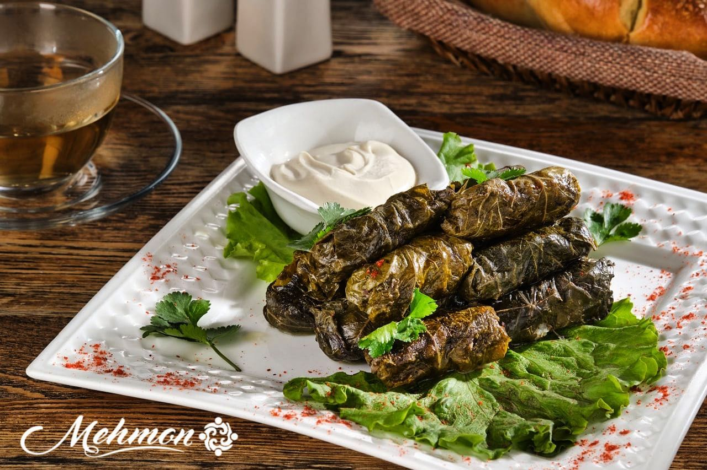
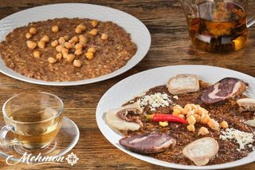
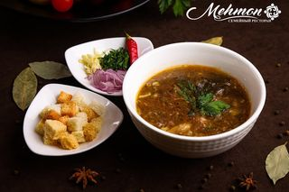
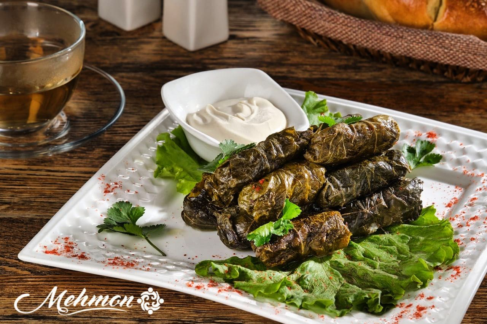
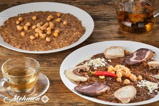

В изматывающем ритме современной жизни необходимо время для восстановления сил. Чем интенсивнее ежедневная суета, тем острее эта потребность. Именно у нас всегда отдыхаешь от забот и забываешь проблемы, именно здесь чувствуешь себя беззаботно и уютно и, самое главное, получаешь гастрономическое наслаждение!
Фьюжн — стиль ресторана Mehmon!
Войдя в ресторан вы сразу попадаете в атмосферу тепла исходящего от преобладающих в интерьере натуральных материалов, ротанговой мебели, большого количества дерева использованного в отделке и обилия живых растений. Выбирайте зал с камином, одну из кабинок или дворик со стеклянной панорамной крышей - все сделано, что бы вам было удобно и комфортно.Обьединение стилей не только в интерьере, но и в предлагаемой кухне рождает синергию, которая притягивает и влечет к нам снова и снова!
Богатое меню ресторана всегда удивляет. Каждый раз придя в Mehmon вы обязательно найдете что-то новое, чего еще не пробовали!
Вот три основных причины почему наши гости и друзья отдают нам предпочтение:
Необычное меню и вкусная кухня, где европейские традиции соединены с восточными
Возможность отдохнуть в семейном ресторане с приятной, спокойной атмосферой и негромкой живой музыкой
Возможность отметить торжество в ресторане где будут удовлетворены вкусы всех приглашенных
Причин посетить ресторан Mehmon - много, но лучше прийти и убедиться во всем самостоятельно.
Мы Всем Всегда Рады!
 




